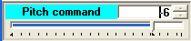

Indicadores / controles LdP
Para facilitar la compresión de las funcionalidades de estos componentes primero veremos el objetivo que se quiere resolver. En la siguiente figura, en la parte superior, tenemos dos bloques ("Nacelle emulator" y "Controller emulator") usados en un simulador particular y con unas determinadas conexiones entre sí. Una de ellas se refiere a "Generator rpms".

En la parte inferior, tenemos los mismos bloques pero esta vez la señal de salida "Generator rpms" se pasa por un sinóptico para que el usuario pueda apreciar su valor en tiempo real. En este sinóptico tenemos dos indicadores: uno "lineal" y otro "circular". El indicador circular está "acoplado" al lineal. El lineal dispone de dos conexiones: una por la izquierda (de entrada) y otra por la derecha (de salida). En situación "normal" se asume que este componente debe comportarse como un mero indicador, es decir, replicando en su salida el valor de su entrada.
Sin embargo, es posible pensar que durante la ejecución de una simulación puede ser interesante disponer de un mecanismo de fácil uso que permita probar la reacción de uno de los componentes del simulador (en este caso el "Controller emulator") cuando el valor de la señal "Generator rpms" que el recibe no coincida con la realidad (que es el valor de la señal "Generator rpms" que sale de "Nacelle emulator"). Esto podría implementarse añadiendo al sinóptico otro "control gráfico" (o botón) que permitiera esta funcionalidad: sin embargo esta solución tendría el inconveniente de complicar el sinóptico y además lo haría más grande.
El componente lineal de LdP que se muestra en la figura anterior resuelve este problema añadiendo la funcionalidad de poder trabajar en tres "modos":
•En "modo seguimiento": en este caso su valor de salida corresponde con el de su entrada, que además es el que se representa.
•En "modo forzar": en este modo, son activos los distintos subcomponentes (la entrada de texto y el deslizador) con los que el usuario modifica la salida de este componente, independientemente del valor de su entrada.
De esta forma el mismo componente sirve los dos propósitos.
El cambio de modo se realiza de una forma muy simple haciendo click en el componente y pulsando la tecla "F6", que conmuta entre ambos estados. El cambio a "forzar" puede estar protegido por una palabra clave.
Existe un tercer modo llamado "solo presentación" cuya funcionalidad es solo la de ser un indicador, sin capacidad para replicar en su salida el valor de su entrada. Este modo solo es seleccionable durante la fase de desarrollo, no en ejecución.
Existen dos indicadores LdP, uno para señales analógicas y otro para digitales.
Tipo de señal |
modo seguimiento |
modo forzar |
Analógica |
 borde gris |
borde rojo |
Digital |
borde verde |
borde rojo |
Ejemplos:
En las siguientes figuras se muestran algunas configuraciones usadas en algunos simuladores.